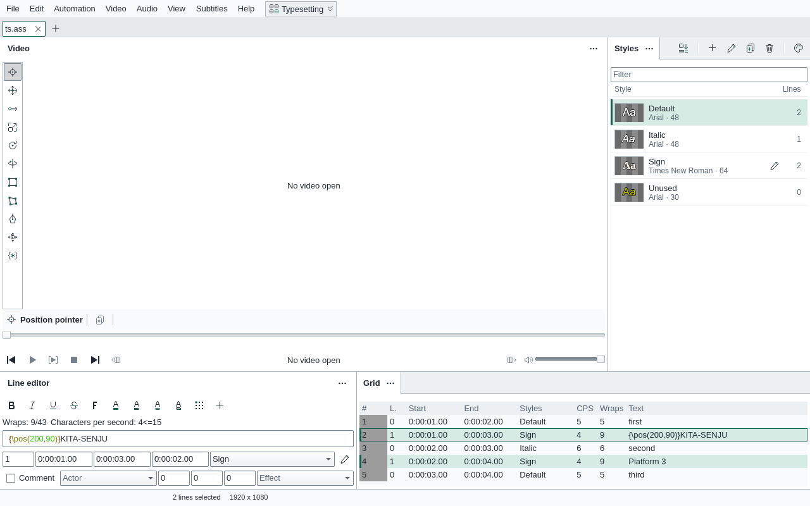
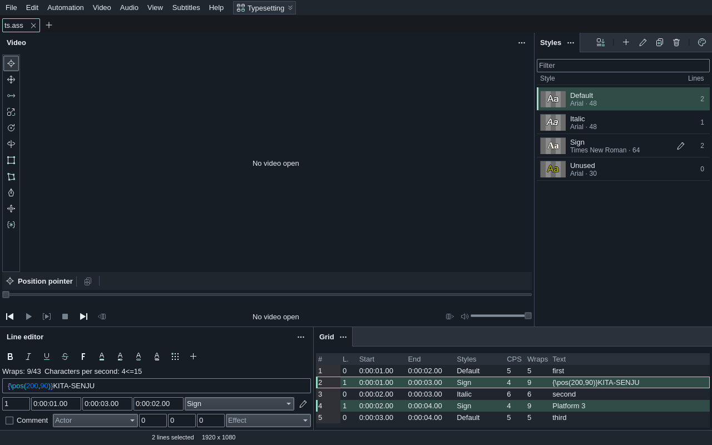

HikariSub
HikariSub
HikariSub
A subtitle editor and player for everything from quick fixes to full typesetting. ASS, SRT and other formats, with frame-accurate video, for Windows and Linux.


What it does
Each of these has a guide.
Typesetting
Visual tools on the video for position, rotation, scaling, clips, drawing and perspective, with the exact values beside them.
Visual tools →Karaoke
Split and join syllables, tap to time, the Kanji timer and onset snap, then the templater for effects.
Karaoke →Timing
Audio with waveform or spectrum, keyframe snapping, time shifting and a post-processor.
Timing →Styles
A style manager with a live preview, reusable style catalogs and font catalogs.
Styles →Translation
Translation mode shows the original next to your text, and lines can be matched when pasting a translation.
Translation →Checking
Spelling, minor-error fixes and side-by-side comparison of two files.
Checking →Automation
Lua and MoonScript macros, the Automation panel and DependencyControl.
Automation →Your workspace
Layouts for each kind of work, themes and every hotkey remappable.
Customize →Used HikariSub 0.0.x? 0.1 is a new app. It reads your old settings and keeps its own, so you can go back to 0.0.x and find everything as you left it.
Moving from legacy